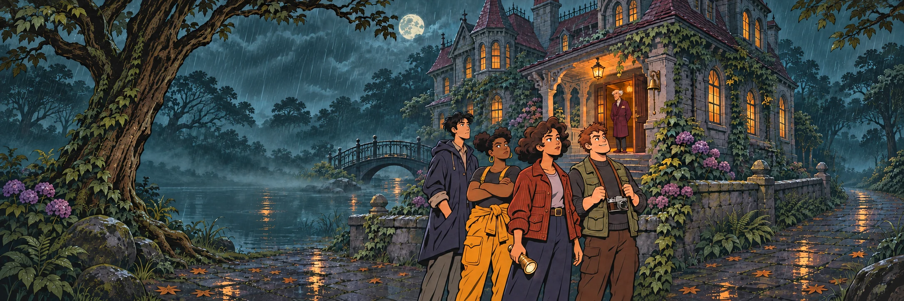
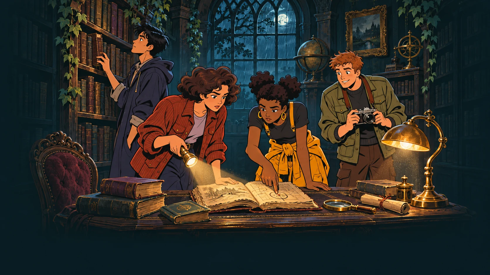
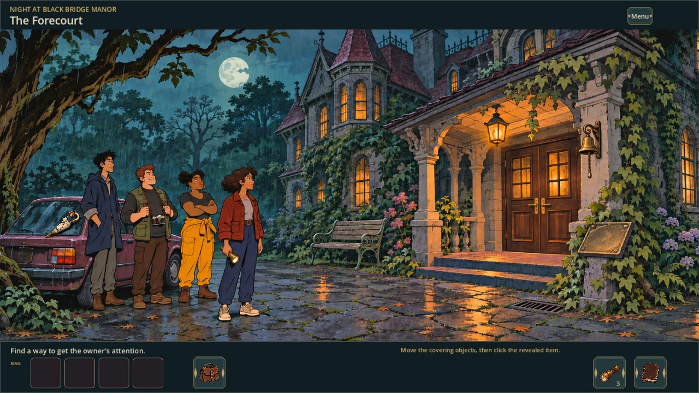
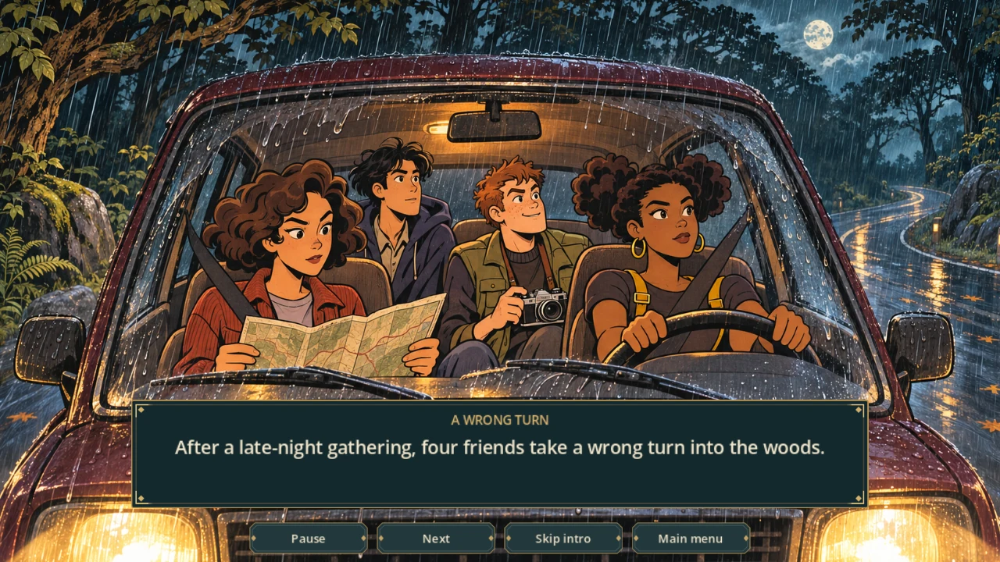
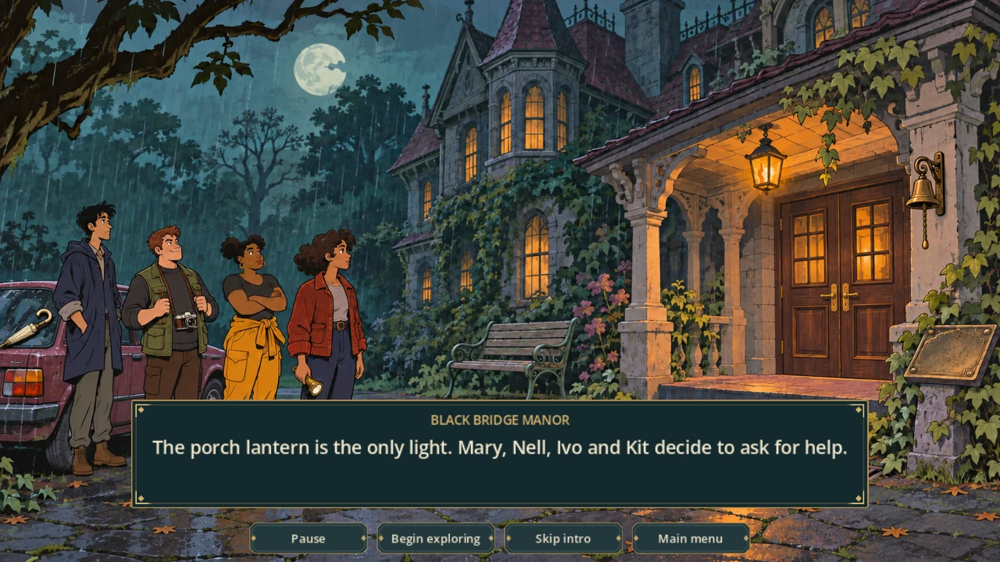

Search the shadows
Explore richly illustrated rooms and discover the objects hiding in plain sight.

A spooky-comedy mystery adventure
Some doors are better left unopened.
Unfortunately, it’s raining.
An invitation in the rain
A wrong turn. A broken-down car. A light beyond the trees. For Mary, Nell, Ivo, and Kit, Black Bridge Manor seems like a welcome escape from the storm.
But when their host disappears and a mysterious warning turns up, shelter becomes something rather less comforting.
Search the rooms, follow the clues, and get to know four friends whose curiosity—and sense of humor—might just see them through the night.
The house has a story.
It’s keeping a few things to itself.

Look a little closer
Explore richly illustrated rooms and discover the objects hiding in plain sight.
Inspect your finds, solve inventory puzzles, and connect the evidence in your journal.
Follow a story of uneasy discoveries, dry humor, and friendship, with optional hints when you need a nudge.
A glimpse beyond the gate
Actual screenshots from the development build.
Artwork and interface may change.



Still taking shape
Night at Black Bridge Manor is in development. We’re refining the adventure, polishing the details, and making sure every clue finds its place.
A release date and public download will be shared when they’re ready.
Explore Two Shores Interactive